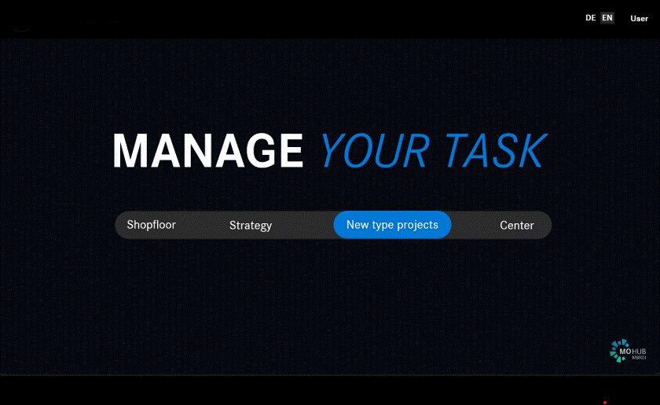
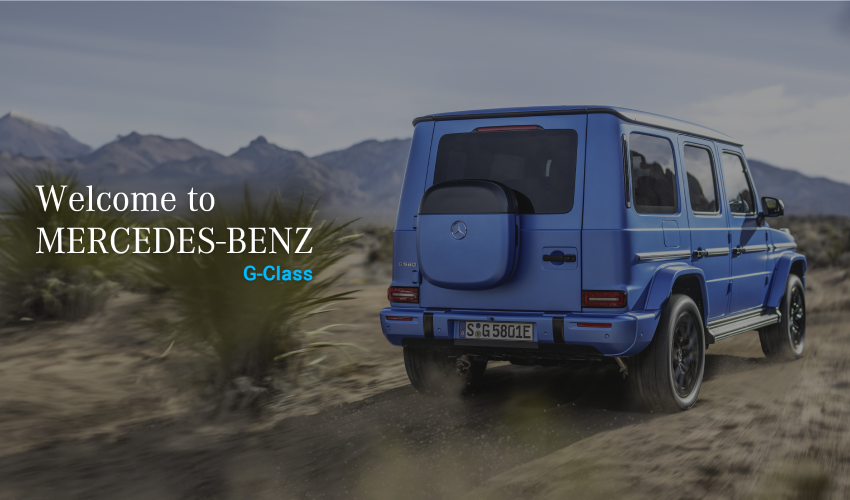
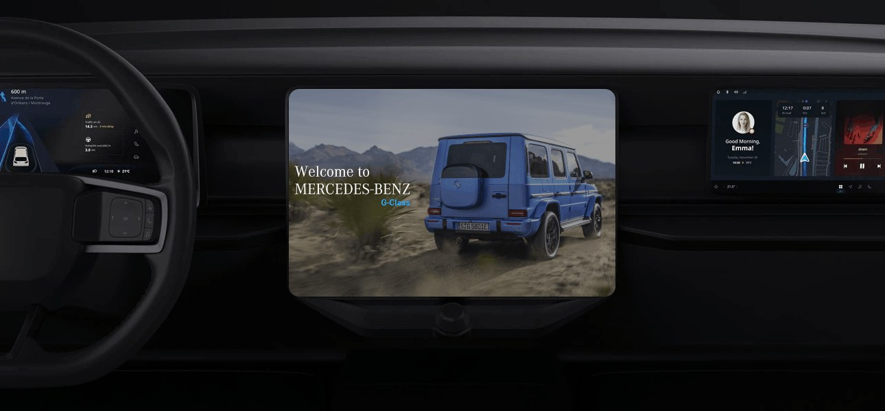
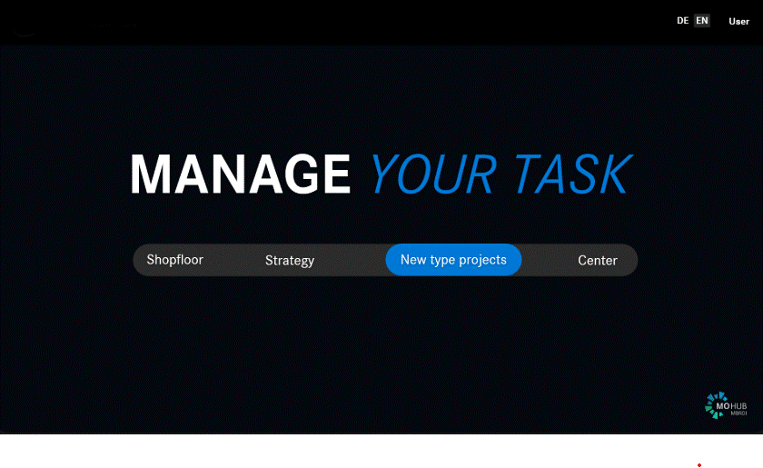
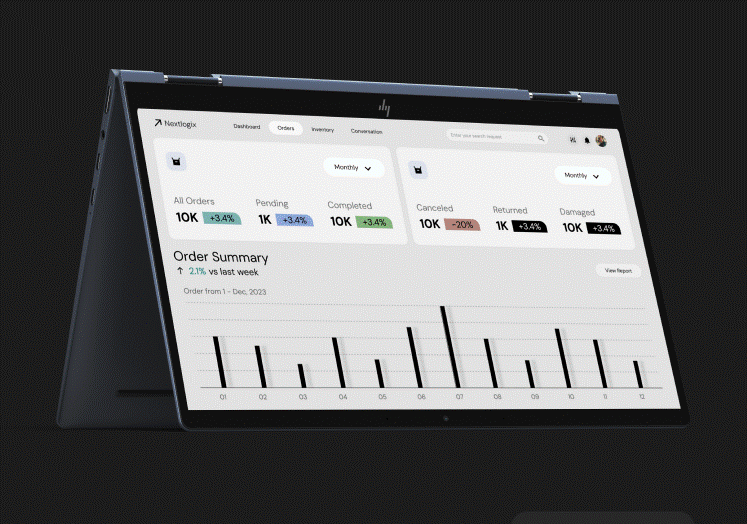
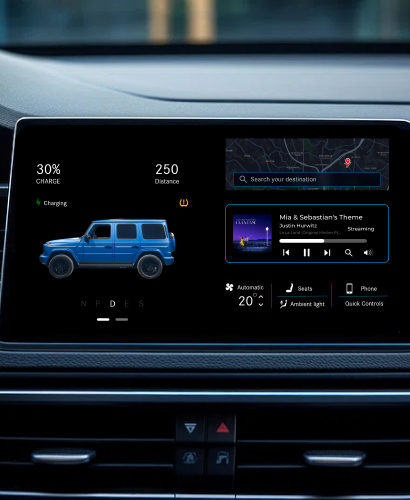
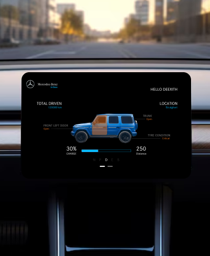

I design digital products that make complex things simple.
Product Designer focused on creating clear, useful and engaging digital experiences — from strategy and UX to interaction, visual design and motion.
I bring interfaces to life through motion.
Interaction and motion design that gives digital products rhythm and feedback — from UI micro-interactions to full interactive prototypes.
Exploring visual systems, composition and digital aesthetics.
The same product work, seen through colour, composition and typography — where visual craft carries as much of the story as the interaction does.
UX & Product case studies
Enterprise tools, dashboards and an automotive interface concept — each one taken from a real problem to a resolved interface.

View Case Study →Engineering & Quality Applications
Turning battery-tracking, defect-detection and quality-audit tools into one consistent, accessible application family.

View Case Study →G-Class Electric — Infotainment
A calm, glanceable in-vehicle infotainment concept — from sketch to interactive prototype.
Nextlogix — Logistics & Inventory Dashboard
Simplifying multi-warehouse order and inventory tracking into one clear operational view.
Interaction & motion studies
Interactive prototypes and UI motion, captured from Figma. Motion graphics background from 2D/3D explainer video work at Toppr (Byju's).

▶G-Class Infotainment — Motion Study

▶MO Hub — Task Flow Interaction

▶Nextlogix — Dashboard Interaction
2D/3D Motion Graphics
Toppr (Byju's) — Motion Graphic Designer, 2018–2019
Composition, colour & typographic craft
Selected frames from the product work above, read through composition and colour rather than flow — the visual layer underneath the UX.



Designing with curiosity, clarity and purpose.
I'm a Product Designer with 6+ years of experience designing user-centric digital solutions for enterprise products — from engineering and analytics tools to consumer-facing platforms. My work sits across UX strategy, interaction design, visual design, design systems and motion.
I care about accessible, WCAG-aligned interfaces and design systems that hold up as products scale — and I collaborate closely with engineering, QA and stakeholder teams to get there, including mentoring newer designers along the way.
Senior Product Designer
Spearheaded design of engineering applications and analytics SaaS, improving efficiency and usability across departments while aligning with brand and WCAG principles. Developed high-fidelity prototypes for battery-tracking, defect-detection and quality-audit applications, and contributed to the Mercedes-Benz Design System COE. Also mentors lateral colleagues and PGET on UI/UX and product design.
UI/UX Designer
Delivered SaaS and web tool designs for the aerospace industry, supporting aircraft maintenance workflows. Conducted user workflow research and usability testing, and worked closely with stakeholders to keep design delivery on schedule.
Motion Graphic Designer
Produced 2D/3D motion graphics and explainer videos for e-learning platforms, using compositing and animation techniques to elevate video impact.
A calm process for messy problems
Understand
Understand the people, the problem and the context before touching the interface.
Simplify
Turn complexity into a clear, structured experience — cut before you add.
Explore
Generate and pressure-test multiple directions rather than committing to the first idea.
Build
Create refined interfaces and reusable systems, not one-off screens.
Evolve
Learn from feedback and real usage, and keep the system improving after launch.